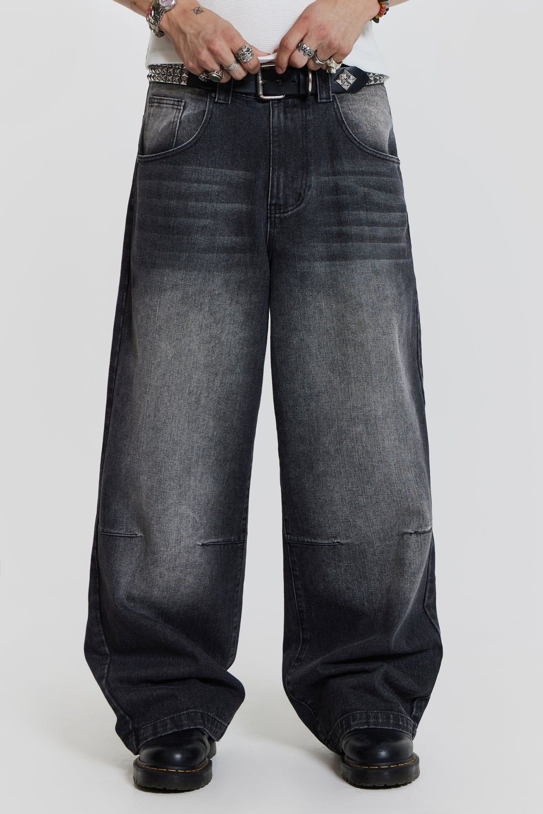
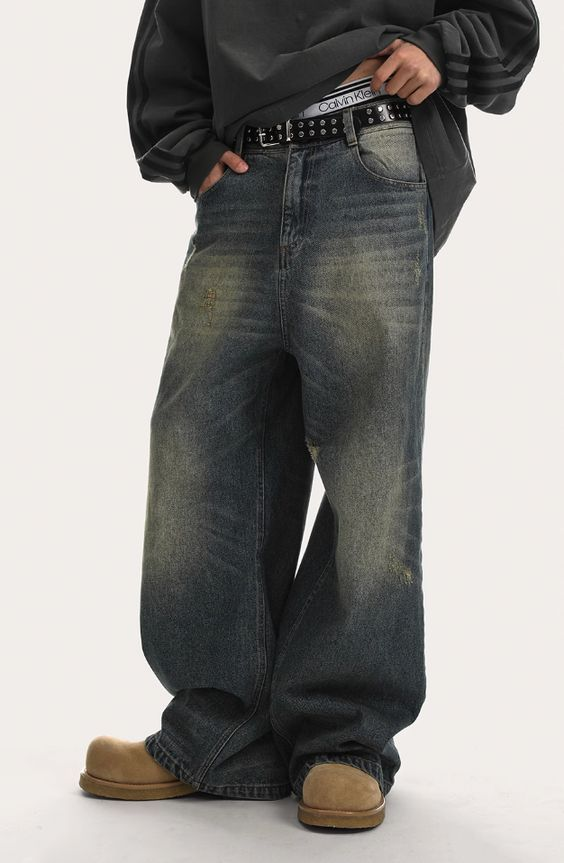
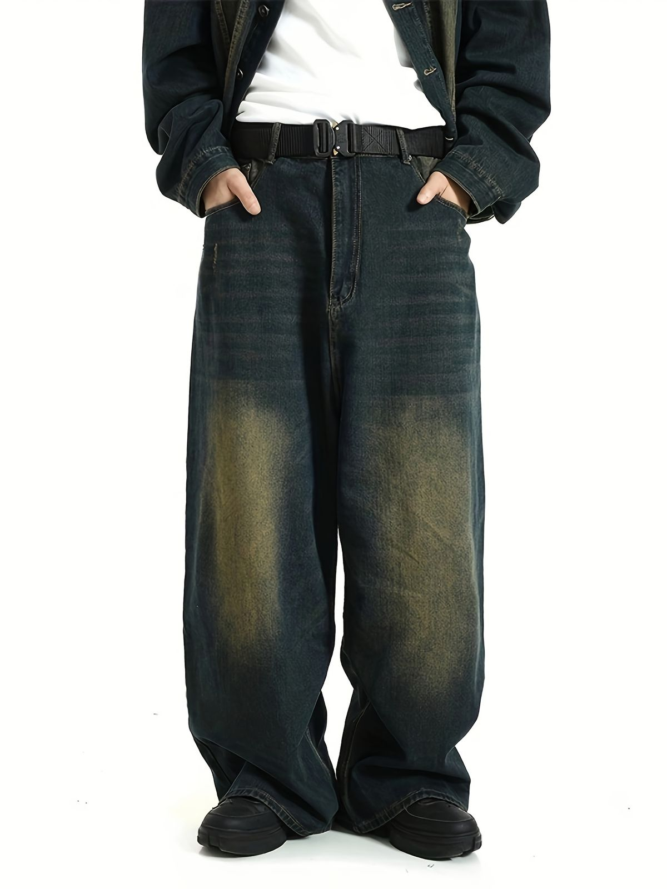
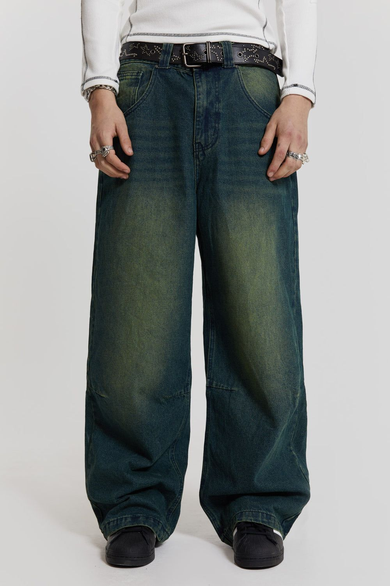
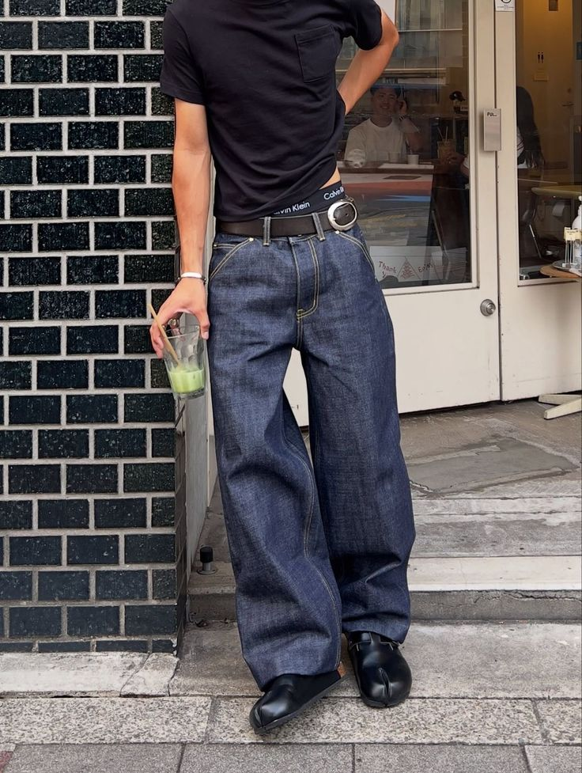

$89

$92

$95

$98

$85
SWITZMIERCH exists between gothic luxury and underground streetwear. Oversized silhouettes, washed denim, and monochrome palettes form the foundation of every piece.
Designed for those who reject fast trends. Built around timeless denim, darkness, and presence. Every garment belongs to an evolving archive rather than a seasonal collection.